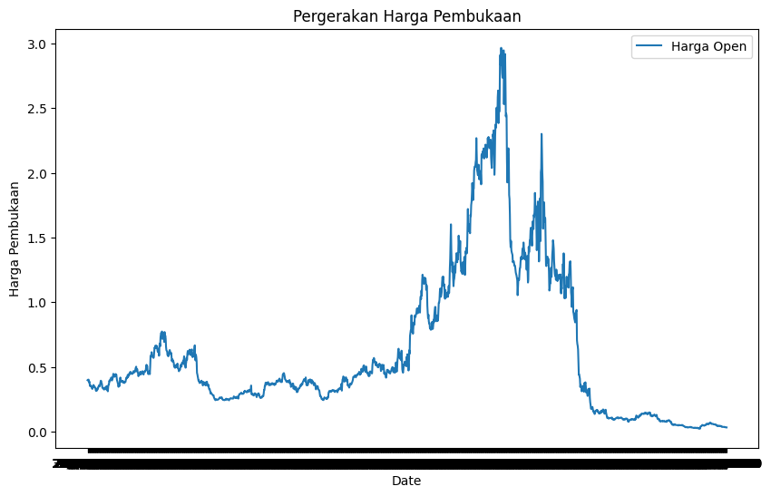
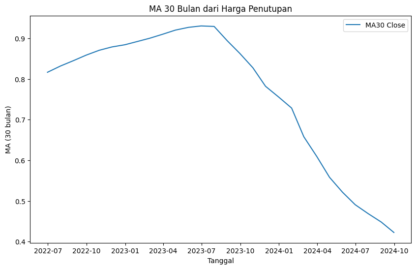
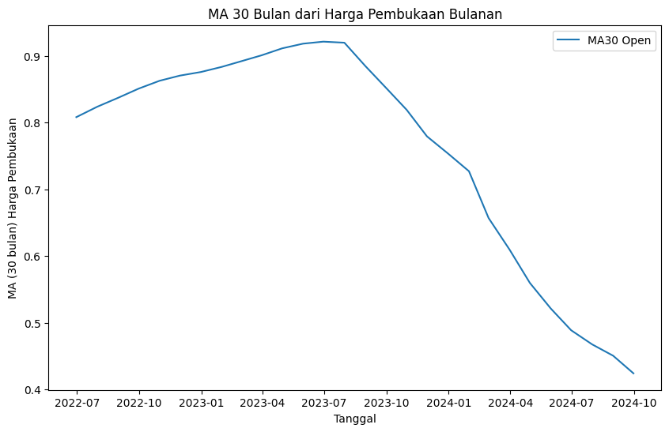
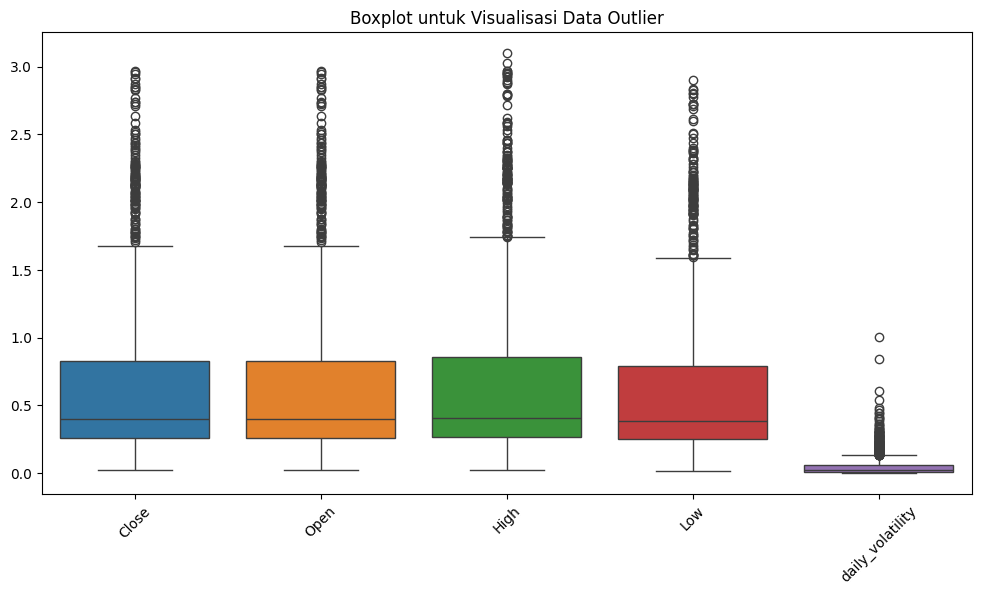

Prediksi Harga Mata Uang Kripto Cardano dengan Metode LSTM (Long Short Term Memory)#
Import Library#
import pandas as pd
import numpy as np
import matplotlib.pyplot as plt
from sklearn.impute import KNNImputer
from sklearn.preprocessing import MinMaxScaler
from sklearn.model_selection import train_test_split
import seaborn as sns
import tensorflow as tf
from tensorflow.keras.models import Sequential
from tensorflow.keras.layers import LSTM, Dropout, Dense
from tensorflow.keras.callbacks import EarlyStopping
from tensorflow.keras.optimizers import Adam
from tqdm import tqdm
from sklearn.metrics import mean_absolute_error, mean_squared_error
---------------------------------------------------------------------------
ModuleNotFoundError Traceback (most recent call last)
Cell In[1], line 3
1 import pandas as pd
2 import numpy as np
----> 3 import matplotlib.pyplot as plt
4 from sklearn.impute import KNNImputer
5 from sklearn.preprocessing import MinMaxScaler
ModuleNotFoundError: No module named 'matplotlib'
Eksplorasi Data#
Memuat Data#
df = pd.read_csv('Data Historis Cardano.csv')
df.info()
<class 'pandas.core.frame.DataFrame'>
RangeIndex: 1735 entries, 0 to 1734
Data columns (total 7 columns):
# Column Non-Null Count Dtype
--- ------ -------------- -----
0 Tanggal 1735 non-null object
1 Terakhir 1735 non-null object
2 Pembukaan 1735 non-null object
3 Tertinggi 1735 non-null object
4 Terendah 1735 non-null object
5 Vol. 1730 non-null object
6 Perubahan% 1735 non-null object
dtypes: object(7)
memory usage: 95.0+ KB
df.rename(columns={
'Tanggal': 'Date',
'Terakhir': 'Close',
'Pembukaan': 'Open',
'Tertinggi': 'High',
'Terendah': 'Low',
'Vol.': 'Volume',
'Perubahan%': 'Change'
}, inplace=True)
df.head()
| Date | Close | Open | High | Low | Volume | Change | |
|---|---|---|---|---|---|---|---|
| 0 | 30/09/2024 | 0,3734 | 0,3976 | 0,3976 | 0,3709 | 143,27M | -6,07% |
| 1 | 29/09/2024 | 0,3976 | 0,4006 | 0,4041 | 0,3927 | 89,35M | -0,74% |
| 2 | 28/09/2024 | 0,4006 | 0,4017 | 0,4058 | 0,3924 | 102,69M | -0,27% |
| 3 | 27/09/2024 | 0,4017 | 0,4016 | 0,4153 | 0,3999 | 148,17M | 0,00% |
| 4 | 26/09/2024 | 0,4016 | 0,3811 | 0,4037 | 0,3782 | 165,03M | 5,38% |
Mengubah Tipe Data#
df['Change'] = df['Change'].str.replace('%', '').str.replace(',', '.').astype(float)
df.head()
| Date | Close | Open | High | Low | Volume | Change | |
|---|---|---|---|---|---|---|---|
| 0 | 30/09/2024 | 0,3734 | 0,3976 | 0,3976 | 0,3709 | 143,27M | -6.07 |
| 1 | 29/09/2024 | 0,3976 | 0,4006 | 0,4041 | 0,3927 | 89,35M | -0.74 |
| 2 | 28/09/2024 | 0,4006 | 0,4017 | 0,4058 | 0,3924 | 102,69M | -0.27 |
| 3 | 27/09/2024 | 0,4017 | 0,4016 | 0,4153 | 0,3999 | 148,17M | 0.00 |
| 4 | 26/09/2024 | 0,4016 | 0,3811 | 0,4037 | 0,3782 | 165,03M | 5.38 |
df['Volume'] = df['Volume'].str.replace('M', 'e6').str.replace('B', 'e9').str.replace(',', '.').astype(float)
df['Close'] = df['Close'].str.replace(',', '.').astype(float)
df['Open'] = df['Open'].str.replace(',', '.').astype(float)
df['High'] = df['High'].str.replace(',', '.').astype(float)
df['Low'] = df['Low'].str.replace(',', '.').astype(float)
df['Change'] = df['Change'].astype(float)
df.head()
| Date | Close | Open | High | Low | Volume | Change | |
|---|---|---|---|---|---|---|---|
| 0 | 30/09/2024 | 0.3734 | 0.3976 | 0.3976 | 0.3709 | 143270000.0 | -6.07 |
| 1 | 29/09/2024 | 0.3976 | 0.4006 | 0.4041 | 0.3927 | 89350000.0 | -0.74 |
| 2 | 28/09/2024 | 0.4006 | 0.4017 | 0.4058 | 0.3924 | 102690000.0 | -0.27 |
| 3 | 27/09/2024 | 0.4017 | 0.4016 | 0.4153 | 0.3999 | 148170000.0 | 0.00 |
| 4 | 26/09/2024 | 0.4016 | 0.3811 | 0.4037 | 0.3782 | 165030000.0 | 5.38 |
df.info()
<class 'pandas.core.frame.DataFrame'>
RangeIndex: 1735 entries, 0 to 1734
Data columns (total 7 columns):
# Column Non-Null Count Dtype
--- ------ -------------- -----
0 Date 1735 non-null object
1 Close 1735 non-null float64
2 Open 1735 non-null float64
3 High 1735 non-null float64
4 Low 1735 non-null float64
5 Volume 1730 non-null float64
6 Change 1735 non-null float64
dtypes: float64(6), object(1)
memory usage: 95.0+ KB
Imputasi Missing Values#
df.isnull().sum()
Date 0
Close 0
Open 0
High 0
Low 0
Volume 5
Change 0
dtype: int64
imputer = KNNImputer(n_neighbors=2)
df_imputed = df.copy()
df_imputed[['Volume']] = imputer.fit_transform(df[['Volume']])
df = df_imputed
df.isnull().sum()
Date 0
Close 0
Open 0
High 0
Low 0
Volume 0
Change 0
dtype: int64
Visualisasi Data#
Pergerakan Harga Pembukaan#
plt.figure(figsize=(10, 6))
plt.plot(df['Date'], df['Open'], label='Harga Open')
plt.xlabel('Date')
plt.ylabel('Harga Pembukaan')
plt.title('Pergerakan Harga Pembukaan')
plt.legend()
plt.show()

Pergerakan Harga Penutupan#
# Mengubah kolom 'Date' menjadi tipe datetime
df['Date'] = pd.to_datetime(df['Date'], format='%d/%m/%Y')
# Mengatur 'Date' sebagai index
df.set_index('Date', inplace=True)
# Mengubah data harian menjadi data bulanan dengan mengambil harga penutupan terakhir setiap bulan
df_bulanan = df.resample('M').last()
# Plot harga penutupan bulanan
plt.figure(figsize=(10, 6))
plt.plot(df_bulanan.index, df_bulanan['Close'], label='Harga Penutupan Bulanan')
plt.xlabel('Date')
plt.ylabel('Harga Penutupan')
plt.title('Pergerakan Harga Penutupan Bulanan')
plt.legend()
plt.show()
/tmp/ipykernel_6480/3655211889.py:8: FutureWarning: 'M' is deprecated and will be removed in a future version, please use 'ME' instead.
df_bulanan = df.resample('M').last()
Harga Penutupan MA 30#
# Menghitung rata-rata bergerak (MA) untuk jendela 30 bulan
df_bulanan['MA30_Close'] = df_bulanan['Close'].rolling(window=30).mean()
# Plot rata-rata bergerak
plt.figure(figsize=(10, 6))
plt.plot(df_bulanan.index, df_bulanan['MA30_Close'], label='MA30 Close')
plt.xlabel('Tanggal')
plt.ylabel('MA (30 bulan)')
plt.title('MA 30 Bulan dari Harga Penutupan')
plt.legend()
plt.show()

Harga Pembukaan MA 30#
# Mengubah data harian menjadi data bulanan dengan mengambil harga pembukaan terakhir setiap bulan
df_bulanan['MA30_Open'] = df_bulanan['Open'].rolling(window=30).mean()
# Plot rata-rata bergerak harga pembukaan bulanan
plt.figure(figsize=(10, 6))
plt.plot(df_bulanan.index, df_bulanan['MA30_Open'], label='MA30 Open')
plt.xlabel('Tanggal')
plt.ylabel('MA (30 bulan) Harga Pembukaan')
plt.title('MA 30 Bulan dari Harga Pembukaan Bulanan')
plt.legend()
plt.show()

Volatilitas Harian#
# Menambahkan kolom volatilitas harian
df['daily_volatility'] = df['High'] - df['Low']
# Mengubah data harian menjadi data bulanan dengan mengambil volatilitas harian terakhir setiap bulan
df_bulanan['Volatilitas_Bulanan'] = df['daily_volatility'].resample('M').last()
# Plot volatilitas bulanan
plt.figure(figsize=(10, 6))
plt.plot(df_bulanan.index, df_bulanan['Volatilitas_Bulanan'], label='Volatilitas Bulanan')
plt.xlabel('Tanggal')
plt.ylabel('Volatilitas Bulanan')
plt.title('Volatilitas Bulanan Harga Cardano')
plt.legend()
plt.show()
/tmp/ipykernel_6480/142378207.py:5: FutureWarning: 'M' is deprecated and will be removed in a future version, please use 'ME' instead.
df_bulanan['Volatilitas_Bulanan'] = df['daily_volatility'].resample('M').last()
Volume Perdangan#
# Mengubah data harian menjadi data bulanan dengan menjumlahkan volume perdagangan setiap bulan
df_bulanan['Volume_Bulanan'] = df['Volume'].resample('M').sum()
# Plot volume perdagangan bulanan
plt.figure(figsize=(10, 6))
plt.plot(df_bulanan.index, df_bulanan['Volume_Bulanan'], label='Volume Perdagangan Bulanan')
plt.xlabel('Tanggal')
plt.ylabel('Volume Perdagangan')
plt.title('Volume Perdagangan Bulanan')
plt.legend()
plt.show()
/tmp/ipykernel_6480/1629643273.py:2: FutureWarning: 'M' is deprecated and will be removed in a future version, please use 'ME' instead.
df_bulanan['Volume_Bulanan'] = df['Volume'].resample('M').sum()
Korelasi Antar Variabel#
correlation_matrix = df.corr()
print(correlation_matrix)
plt.figure(figsize=(10, 8))
sns.heatmap(correlation_matrix, annot=True, cmap='coolwarm', linewidths=0.5)
plt.title('Correlation Matrix')
plt.show()
Close Open High Low Volume Change \
Close 1.000000 0.996477 0.998657 0.997674 0.046408 0.012080
Open 0.996477 1.000000 0.998114 0.996847 0.041480 -0.048996
High 0.998657 0.998114 1.000000 0.996172 0.061832 -0.012594
Low 0.997674 0.996847 0.996172 1.000000 0.016858 -0.015539
Volume 0.046408 0.041480 0.061832 0.016858 1.000000 0.156332
Change 0.012080 -0.048996 -0.012594 -0.015539 0.156332 1.000000
daily_volatility 0.729242 0.730996 0.751674 0.691147 0.384033 0.013115
daily_volatility
Close 0.729242
Open 0.730996
High 0.751674
Low 0.691147
Volume 0.384033
Change 0.013115
daily_volatility 1.000000
Pre-Processing Data#
Seleksi Fitur#
df.drop(columns=['Change', 'Volume'], inplace=True)
df.head()
| Close | Open | High | Low | daily_volatility | |
|---|---|---|---|---|---|
| Date | |||||
| 2024-09-30 | 0.3734 | 0.3976 | 0.3976 | 0.3709 | 0.0267 |
| 2024-09-29 | 0.3976 | 0.4006 | 0.4041 | 0.3927 | 0.0114 |
| 2024-09-28 | 0.4006 | 0.4017 | 0.4058 | 0.3924 | 0.0134 |
| 2024-09-27 | 0.4017 | 0.4016 | 0.4153 | 0.3999 | 0.0154 |
| 2024-09-26 | 0.4016 | 0.3811 | 0.4037 | 0.3782 | 0.0255 |
Penanganan Outlier#
plt.figure(figsize=(12, 6))
sns.boxplot(data=df[['Close', 'Open', 'High', 'Low', 'daily_volatility']])
plt.title('Boxplot untuk Visualisasi Data Outlier')
plt.xticks(rotation=45)
plt.show()

Normaliasi Data dengan Min-Max Scaling#
Alokasi Data Training dan Testing#
Modelling#
# Preprocessing: Selecting 'Open' column for prediction
data = df[['Open']].values
# Feature scaling (Normalize the data between 0 and 1)
scaler = MinMaxScaler(feature_range=(0, 1))
scaled_data = scaler.fit_transform(data)
# Define the number of time steps (e.g., 120 days of history)
time_steps = 120
future_days = 30 # We will predict for the next 30 days (1 month)
# Build the LSTM model
model = Sequential()
model.add(LSTM(units=100, return_sequences=True, input_shape=(time_steps, 1)))
model.add(Dropout(0.3))
model.add(LSTM(units=100, return_sequences=True))
model.add(Dropout(0.3))
model.add(LSTM(units=100, return_sequences=False))
model.add(Dropout(0.3))
model.add(Dense(units=1))
# Compile model with a lower learning rate
model.compile(optimizer=Adam(learning_rate=0.0005), loss='mean_squared_error')
# Use EarlyStopping callback to avoid overfitting
early_stop = EarlyStopping(monitor='val_loss', patience=5, restore_best_weights=True)
# Step 1: Create sliding window sequences for training the model
def create_sequences(data, time_steps):
X, y = [], []
for i in range(time_steps, len(data)):
X.append(data[i-time_steps:i, 0])
y.append(data[i, 0])
return np.array(X), np.array(y)
X, y = create_sequences(scaled_data, time_steps)
X = np.reshape(X, (X.shape[0], X.shape[1], 1)) # Reshape for LSTM input
# Split into train and test (80% train, 20% test)
split_ratio = 0.8
train_size = int(len(X) * split_ratio)
X_train, y_train = X[:train_size], y[:train_size]
X_test, y_test = X[train_size:], y[train_size:]
# Train the model and save the training history
history = model.fit(X_train, y_train,
epochs=50,
batch_size=32,
validation_data=(X_test, y_test),
callbacks=[early_stop])
# Plot training & validation loss values to analyze overfitting
plt.figure(figsize=(10, 6))
plt.plot(history.history['loss'], label='Training Loss', color='blue')
plt.plot(history.history['val_loss'], label='Validation Loss', color='red')
plt.title('Model Loss During Training (Overfitting Analysis)')
plt.xlabel('Epoch')
plt.ylabel('Loss')
plt.legend()
plt.show()
# Step 2: Take the last 120 days from the dataset to make future predictions
last_120_days = scaled_data[-time_steps:]
# Step 3: Predict 30 days iteratively (future_days = 30)
predictions = []
input_sequence = last_120_days
for _ in tqdm(range(future_days)):
input_sequence_reshaped = np.reshape(input_sequence, (1, time_steps, 1)) # Reshape to (1, 120, 1) for LSTM input
predicted_open = model.predict(input_sequence_reshaped)
# Append the prediction to the predictions list
predictions.append(predicted_open[0, 0])
# Update the input sequence by appending the predicted value and removing the first value
input_sequence = np.append(input_sequence, predicted_open)[1:]
# Step 4: Inverse transform the predictions back to original scale
predicted_open_prices = scaler.inverse_transform(np.array(predictions).reshape(-1, 1))
# Step 5: Prepare the combined data for plotting
# Get the last 120 days of actual data to plot
historical_data = data[-time_steps:]
# Create a new array that combines the historical data with predicted data
combined_data = np.concatenate((historical_data, predicted_open_prices), axis=0)
# Step 6: Plot the historical data and predicted data together
plt.figure(figsize=(14, 5))
plt.plot(range(len(historical_data)), historical_data, color='green', label='Historical Open Prices (Last 120 Days)')
plt.plot(range(len(historical_data), len(combined_data)), predicted_open_prices, color='blue', label='Predicted Open Prices (Next 30 Days)')
plt.title('Historical and Predicted Open Prices')
plt.xlabel('Time')
plt.ylabel('Open Price')
plt.legend()
plt.show()
/home/wchynto/media/data/Personal/Kuliah/PSD/prediksi-harga-cardano/.venv/lib/python3.12/site-packages/keras/src/layers/rnn/rnn.py:204: UserWarning: Do not pass an `input_shape`/`input_dim` argument to a layer. When using Sequential models, prefer using an `Input(shape)` object as the first layer in the model instead.
super().__init__(**kwargs)
Epoch 1/50
41/41 ━━━━━━━━━━━━━━━━━━━━ 20s 306ms/step - loss: 0.0339 - val_loss: 4.2474e-05
Epoch 2/50
41/41 ━━━━━━━━━━━━━━━━━━━━ 12s 288ms/step - loss: 0.0041 - val_loss: 1.6050e-04
Epoch 3/50
41/41 ━━━━━━━━━━━━━━━━━━━━ 11s 278ms/step - loss: 0.0034 - val_loss: 6.9091e-05
Epoch 4/50
41/41 ━━━━━━━━━━━━━━━━━━━━ 12s 304ms/step - loss: 0.0034 - val_loss: 2.2788e-05
Epoch 5/50
41/41 ━━━━━━━━━━━━━━━━━━━━ 11s 279ms/step - loss: 0.0030 - val_loss: 4.6579e-05
Epoch 6/50
41/41 ━━━━━━━━━━━━━━━━━━━━ 11s 280ms/step - loss: 0.0031 - val_loss: 1.1587e-04
Epoch 7/50
41/41 ━━━━━━━━━━━━━━━━━━━━ 11s 280ms/step - loss: 0.0022 - val_loss: 1.0085e-04
Epoch 8/50
41/41 ━━━━━━━━━━━━━━━━━━━━ 11s 278ms/step - loss: 0.0026 - val_loss: 1.9608e-05
Epoch 9/50
41/41 ━━━━━━━━━━━━━━━━━━━━ 12s 298ms/step - loss: 0.0035 - val_loss: 1.8449e-05
Epoch 10/50
41/41 ━━━━━━━━━━━━━━━━━━━━ 12s 276ms/step - loss: 0.0021 - val_loss: 1.5693e-05
Epoch 11/50
41/41 ━━━━━━━━━━━━━━━━━━━━ 11s 276ms/step - loss: 0.0026 - val_loss: 1.3316e-05
Epoch 12/50
41/41 ━━━━━━━━━━━━━━━━━━━━ 12s 281ms/step - loss: 0.0033 - val_loss: 9.3082e-05
Epoch 13/50
41/41 ━━━━━━━━━━━━━━━━━━━━ 11s 278ms/step - loss: 0.0020 - val_loss: 5.4982e-05
Epoch 14/50
41/41 ━━━━━━━━━━━━━━━━━━━━ 12s 301ms/step - loss: 0.0020 - val_loss: 9.7695e-06
Epoch 15/50
41/41 ━━━━━━━━━━━━━━━━━━━━ 11s 280ms/step - loss: 0.0027 - val_loss: 8.7242e-05
Epoch 16/50
41/41 ━━━━━━━━━━━━━━━━━━━━ 12s 282ms/step - loss: 0.0019 - val_loss: 7.2056e-05
Epoch 17/50
41/41 ━━━━━━━━━━━━━━━━━━━━ 11s 278ms/step - loss: 0.0020 - val_loss: 5.1470e-04
Epoch 18/50
41/41 ━━━━━━━━━━━━━━━━━━━━ 11s 273ms/step - loss: 0.0021 - val_loss: 9.8693e-06
Epoch 19/50
41/41 ━━━━━━━━━━━━━━━━━━━━ 11s 279ms/step - loss: 0.0018 - val_loss: 1.6456e-05
0%| | 0/30 [00:00<?, ?it/s]
1/1 ━━━━━━━━━━━━━━━━━━━━ 1s 770ms/step
3%|▎ | 1/30 [00:00<00:24, 1.19it/s]
1/1 ━━━━━━━━━━━━━━━━━━━━ 0s 74ms/step
7%|▋ | 2/30 [00:01<00:12, 2.27it/s]
1/1 ━━━━━━━━━━━━━━━━━━━━ 0s 60ms/step
10%|█ | 3/30 [00:01<00:08, 3.27it/s]
1/1 ━━━━━━━━━━━━━━━━━━━━ 0s 70ms/step
13%|█▎ | 4/30 [00:01<00:06, 3.95it/s]
1/1 ━━━━━━━━━━━━━━━━━━━━ 0s 62ms/step
17%|█▋ | 5/30 [00:01<00:05, 4.65it/s]
1/1 ━━━━━━━━━━━━━━━━━━━━ 0s 62ms/step
20%|██ | 6/30 [00:01<00:04, 5.24it/s]
1/1 ━━━━━━━━━━━━━━━━━━━━ 0s 75ms/step
23%|██▎ | 7/30 [00:01<00:04, 5.57it/s]
1/1 ━━━━━━━━━━━━━━━━━━━━ 0s 89ms/step
27%|██▋ | 8/30 [00:01<00:03, 5.66it/s]
1/1 ━━━━━━━━━━━━━━━━━━━━ 0s 77ms/step
30%|███ | 9/30 [00:02<00:03, 5.52it/s]
1/1 ━━━━━━━━━━━━━━━━━━━━ 0s 80ms/step
33%|███▎ | 10/30 [00:02<00:03, 5.46it/s]
1/1 ━━━━━━━━━━━━━━━━━━━━ 0s 67ms/step
37%|███▋ | 11/30 [00:02<00:03, 5.78it/s]
1/1 ━━━━━━━━━━━━━━━━━━━━ 0s 64ms/step
40%|████ | 12/30 [00:02<00:03, 5.92it/s]
1/1 ━━━━━━━━━━━━━━━━━━━━ 0s 77ms/step
43%|████▎ | 13/30 [00:02<00:02, 5.89it/s]
1/1 ━━━━━━━━━━━━━━━━━━━━ 0s 109ms/step
47%|████▋ | 14/30 [00:02<00:02, 5.63it/s]
1/1 ━━━━━━━━━━━━━━━━━━━━ 0s 97ms/step
50%|█████ | 15/30 [00:03<00:02, 5.43it/s]
1/1 ━━━━━━━━━━━━━━━━━━━━ 0s 167ms/step
53%|█████▎ | 16/30 [00:03<00:02, 4.71it/s]
1/1 ━━━━━━━━━━━━━━━━━━━━ 0s 80ms/step
57%|█████▋ | 17/30 [00:03<00:02, 5.07it/s]
1/1 ━━━━━━━━━━━━━━━━━━━━ 0s 87ms/step
60%|██████ | 18/30 [00:03<00:02, 5.20it/s]
1/1 ━━━━━━━━━━━━━━━━━━━━ 0s 71ms/step
63%|██████▎ | 19/30 [00:03<00:02, 5.46it/s]
1/1 ━━━━━━━━━━━━━━━━━━━━ 0s 82ms/step
67%|██████▋ | 20/30 [00:04<00:01, 5.35it/s]
1/1 ━━━━━━━━━━━━━━━━━━━━ 0s 150ms/step
70%|███████ | 21/30 [00:04<00:01, 4.70it/s]
1/1 ━━━━━━━━━━━━━━━━━━━━ 0s 59ms/step
73%|███████▎ | 22/30 [00:04<00:01, 5.21it/s]
1/1 ━━━━━━━━━━━━━━━━━━━━ 0s 57ms/step
77%|███████▋ | 23/30 [00:04<00:01, 5.71it/s]
1/1 ━━━━━━━━━━━━━━━━━━━━ 0s 62ms/step
80%|████████ | 24/30 [00:04<00:00, 6.13it/s]
1/1 ━━━━━━━━━━━━━━━━━━━━ 0s 63ms/step
83%|████████▎ | 25/30 [00:05<00:00, 6.37it/s]
1/1 ━━━━━━━━━━━━━━━━━━━━ 0s 64ms/step
87%|████████▋ | 26/30 [00:05<00:00, 6.56it/s]
1/1 ━━━━━━━━━━━━━━━━━━━━ 0s 77ms/step
90%|█████████ | 27/30 [00:05<00:00, 6.40it/s]
1/1 ━━━━━━━━━━━━━━━━━━━━ 0s 74ms/step
93%|█████████▎| 28/30 [00:05<00:00, 6.29it/s]
1/1 ━━━━━━━━━━━━━━━━━━━━ 0s 75ms/step
97%|█████████▋| 29/30 [00:05<00:00, 6.16it/s]
1/1 ━━━━━━━━━━━━━━━━━━━━ 0s 133ms/step
100%|██████████| 30/30 [00:05<00:00, 5.08it/s]
y_pred = model.predict(X_test)
# Step 2: Hitung metrik performa
mae = mean_absolute_error(y_test, y_pred)
mse = mean_squared_error(y_test, y_pred)
rmse = np.sqrt(mse)
# Step 3: Tampilkan hasilnya
print(f'Mean Absolute Error (MAE): {mae}')
print(f'Mean Squared Error (MSE): {mse}')
print(f'Root Mean Squared Error (RMSE): {rmse}')
---------------------------------------------------------------------------
NameError Traceback (most recent call last)
Cell In[1], line 1
----> 1 y_pred = model.predict(X_test)
3 # Step 2: Hitung metrik performa
4 mae = mean_absolute_error(y_test, y_pred)
NameError: name 'model' is not defined